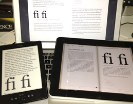
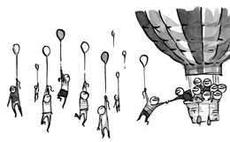
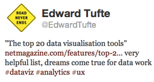
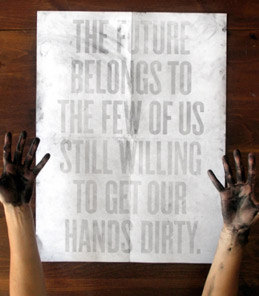
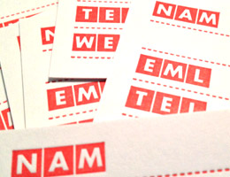
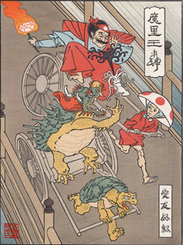

|
Q1: Paper and Production
02013-Q1 Reykjavik, ICELAND: After experimenting, 02013 was determined to be our year of paper. With a few projects like the notebooks and business cards under our belts, we're expanding our range a bit further a field with some interesting projects in the pipe-line.
|
|
Symbol Fonts
I recently wrote a short (7,000 words) eBook for Five Simple Steps entitled A Pocket Guide to Creating Symbol Fonts. The book focuses on the nitty-gritty of how to create your own symbol fonts for use on the web and all the advantages and reasons why.

Ironically, the book is not available in paper, only digital. It's available in several formats for 2 GBP or as part of the 1st collection along with three other great books for 6 GBP. If you are still on the fence about the price, you can use the offer code: 15%OFFCREATINGSYMBOLFONTS to get a 15% discount for the first 100 customers.
I also wrote an article for A List Apart on The Era of Symbol Fonts, focusing more on performance benefits than creation.
|
|

|

An older article about data visualisations made the rounds this last week. The top 20 data visualisation tools was written about 6 months ago, but the list of tools is still relevant and a great place to start. Stay tuned for a follow-up article in the near future.
|
|

A great paper poster design which only comes alive if you are willing to work for it, by Roland Tiangco.
|
|
|
Contest Winner
Q1's Letterpressed Eyjafjallajökull notebook winner was Tony in Ibaraki, Japan. The randomly chosen co-ordinates where Lat: 16.125 Lon: 152.8 over 2560km away.
Remember, You can't win, if you don't enter!
02013 is the second anniversary of (optional.is) so the theme all year is paper. This quarter we'll be giving away a set of letter pressed blank business cards.

These cards are locally letter pressed in Reykjavík, Iceland. With a strong red ink and heavy paper, they stand-out and make a statement.
|
|
Most of June will be spent travelling around Japan. The details of the plan are open-ended, while the goals of this trip are to meet with some interesting manufacturers, designers and technologists. We're planting the seeds for future projects and ideas.
If anyone wants to meet-up, pick our brain, or have us present, contact us at optional@optional.is We're more than happy to connect.
|
|
Ukiyo-e Heroes

Rickshaw Cart, a Ukiyo-e version of one of my personal favourite games, Mario Kart.
Ukiyo-e Heroes is a series of beautiful woodblock print of famous video games in the style of Japanese Ukiyo-e style prints.
Growing-up playing 8-bit games, then seeing these beautiful posters has made me nostalgic. Check out the ever-growing collection.
http://www.ukiyoeheroes.com
|
|
Film: Jiro Dreams of Sushi
The critically acclaimed documentary film Jiro Dreams of Sushi was released in 02011. It follows the life of Jiro Ono, the 85-year-old owner of a Michelin three-star sushi restaurant. His quest for perfection is an interesting look at Japanese culture as well as a bizarre twist on innovation.
If you haven't seen the film, I recommend you do. While the food presentation is beautiful, and I'm sure the taste delicious, you still get this strange sense around the whole experience as he stares as you while you eat.
Originally, the director planned to travel around interviewing several sushi chefs and restaurants, but Jiro was so fascinating, the documentary changed to simply be about this one man.
|
|